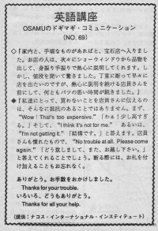

お手数をおかけしました。
Osamu and his wife went to a jewelry store and a salesperson took something out from the case and explained about something eagerly with hand gestures. They were surprised at the price. They wanted to leave the store and tell the clerk "no" politely. But they couldn't because the salesperson explained eagerly. Generally, Americans aren't as scared of what others will think of them as Japanese are. If they don't want it- they will leave and not feel bad for anyone. If they feel really pressured they might make a white lie and say: "I'll think about it."
家内と、手頃なものがあればと、宝石店へ入りました。お店の人は、次々にショーウインドウから品物を出して、身振り手ぶりで熱心に説明してくれます。しかし、値段を聞いて驚きました。丁寧に断わって早々に店を出たいのですが、熱心に説明を続ける店員さんを前にして、何ともバツの悪い時間が続きました。
私達にとって、買わないことを店員さんに伝えるのは、そんなに抵抗のあることではありません。まず、”Wow! That’s too expensive.”「わぁ少し高すぎる。」そして、 I think it’s not for me. あるいは、I’m not getting it. 「結構です。」 と答えます。店員さんも慣れたもので、”No trouble at all. Please come again. 「どう致しまして、また、お越し下さい。」 と答えてくれることでしょう。断わる際には、お礼を付け加えることもお忘れなく。
ありがとう。お手数をおかけしました。
Thank you for your trouble.
いろいろどうもありがとう。
Thank you for all your help.

| © 1995-2013 NACOS International Institute. All Rights Reserved. |